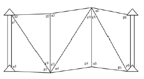
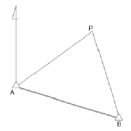
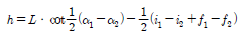
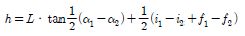
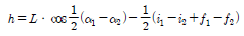
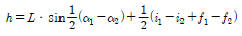
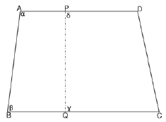
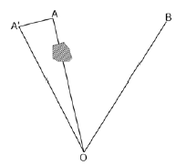
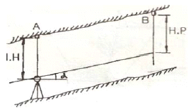
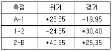

지적기사 (2007-03-04 기출문제)
1과목: 지적측량
1. 측판측량 방법으로 세부측량을 하는 때 측량준비도에 기재할 사항이 아닌 것은?
- 도곽선과 그 수치
- 인근토지의 지번 및 지목
- 측량대상토지의 경계선
- 측량의 기하적과 거리
(정답률: 알수없음)

2. 축척 1/600 지역에서 산출면적이 135.45m2일 때 결정면적은?
- 135m2
- 136m2
- 135.4m2
- 135.5m2
(정답률: 알수없음)
3. 다음 그림의 삼각쇄망에서 방위각 오차가 +18″일 때 4번째 F4에는 얼마를 보정하여야 하는가?

- -3″
- +3″
- -12″
- +12″
(정답률: 알수없음)
4. 지적도의 재작성 기준에 대한 설명으로 적합하지 않은 것은?
- 지적도를 기준으로 한다.
- 도상 0.5mm이상의 신축은 교정후 시행한다.
- 도면의 경계가 불분명한 때에는 재측량을 한다.
- 지목이 불분명한 때에는 대장을 기준으로 한다.
(정답률: 알수없음)
5. 측판측량 방법에 의한 세부측량을 실시하는 경우로서 지적도를 비치하는 지역의 거리측정단위는?
- 1cm
- 5cm
- 10cm
- 20cm
(정답률: 알수없음)
6. 지적위성기준점을 설치할 경우 점간거리 기준은?
- 평균 2킬로미터 내지 5킬로미터
- 평균 10킬로미터 내지 25킬로미터
- 평균 20킬로미터 내지 40킬로미터
- 평균 30킬로미터 내지 50킬로미터
(정답률: 알수없음)
7. 다음 중 지적도근측량에서 1등도선으로 구분되는 것은?
- 삼각점과 지적도근점을 상호연결 도선
- 지적삼각점과 지적도근점의 상호연결도선
- 삼각점과 지적삼각점의 상호연결 도선
- 지적도근점 간의 상호연결 도선
(정답률: 알수없음)
8. 반지름 11km이내의 면적을 기준으로 평면 측량을 시행한다면 이 측량의 정밀도는?
- 1/5000
- 1/10000
- 1/500000
- 1/1000000
(정답률: 알수없음)
9. 다음 그림에서 A점의 좌표가 (1000.00, 1000.00)이고 AP의 방위각이 60°30′30″, AP의 거리가 3000.00m일 때 P점의 좌표는? (단, 좌표단위는 m임)

- (1000.00, 100.00)
- (1476.89, 2611.28)
- (2476.89, 3611.28)
- (3611.28, 2476.89)
(정답률: 알수없음)
10. 임야도를 비치하는 지역의 세부측량에 있어서 지적측량기준점에 의하여 측량하지 아니하고 지적도의 축척으로 측량 후 그 성과에 의하여 임야측량결과도를 작성할 수 있는 경우는?
- 임야도에 도곽선이 없는 경우
- 경계점의 좌표를 구할 수 없는 경우
- 지적도근점이 설치되어 있지 않은 경우
- 지적도에 기지점은 없지만 지적도에 인접하여 있는 경우
(정답률: 알수없음)
11. 두 점의 고저차(h)를 구하는 계산식으로 옳은 것은? (단, α1,α2는 연직각, i1, i2는 기계고, f1, f2는 시준고, L은 수평 거리이다.)




(정답률: 알수없음)
12. 다각망도선법에 의한 지적삼각보조점의 평균방위각과 관측방위각의 폐색오차는? (단, n은 폐색변을 포함한 변의 수)
- ±10√n초 이내
- ±20√n초 이내
- ±10√n분 이내
- ±20√n분 이내
(정답률: 알수없음)
13. 전파기 또는 광파기 측량방법에 의한 지적삼각점의 관측과 계산에 관한 설명으로 틀린 것은?
- 표준편차가 ±(5mm+5ppm)이상의 정밀측 거기를 사용한다.
- 점간거리 측정은 5회 측정한다.
- 측정치의 교차가 10만분의 1미터 이하일 때는 평균치를 측정거리로 하고, 원점에투영된 평면거리로 계산하여야 한다.
- 삼각형의 내각계산은 기지각과의 차가 ±50초 이내이어야 한다.
(정답률: 알수없음)
14. 지적도에 등재하는 색인도의 크기는?
- 가로 5mm, 세로 4mm
- 가로 6mm, 세로 5mm
- 가로 7mm, 세로 6mm
- 가로 8mm, 세로 7mm
(정답률: 알수없음)
15. 최소제곱법으로 조정하는 오차는?
- 정오차
- 우연오차
- 과대오차
- 참오차
(정답률: 알수없음)
16. 지적삼각보조점의 수평각 관측에 대한 설명으로 옳은 것은?
- 교회관측법에 의한다.
- 방위각측정방법에 의한다.
- 방향관측법에 의한다.
- 방위각법과 배각법에 의한다.
(정답률: 알수없음)
17. 그림과 같은 원필지 □ABCD를 분할선 PQ로 분할할 때 협각이 각각 α, β, γ, δ이면 성립하는 등식은?

- α+β=γ+δ
- α+γ=β+δ
- α+δ=β+γ
- α+β+γ+δ=360°
(정답률: 알수없음)
18. 삼각점 측정시 O점에 기계를 세워서 관측하려 하였으나 점A가 장애물로 보이지 않아 부득이 점을 AA'만큼 편심하여 측정하였더니 ∠A'OB = 13°12′06.7″를 얻었다. 실제삼각형 ∠AOB의 수평각은? (단, AA'=2.34m, OA=1234.56m이다.)

- 13°02′26.7″
- 13°08′57.7″
- 13°⑤′55.7″
- 13°02′57.7″
(정답률: 알수없음)
19. 지적도근점의 각도관측에 있어서 폐색오차의 허용범위로 틀린 것은? (단, n은 폐색변을 포함한 변수)
- 배각법에 의할 경우 1등도선 ±20√n초
- 배각법에 의할 경우 2등도선 ±30√n초
- 방위각법에 의할 경우 1등도선 ±√n분
- 방위각법에 의할 경우 2등도선 ±1.5√n분
(정답률: 알수없음)
20. 토지의 면적을 좌표면적계산법에 의하는 경우 산출면적에 대한 설명으로 옳은 것은?
- 1/10m2까지 계산하여 1m2단위로 정한다.
- 1/100m2까지 계산하여 10m2단위로 정한다.
- 1/100m2까지 계산하여 1m2단위로 정한다.
- 1/1000m2까지 계산하여 10m2단위로 정한다.
(정답률: 알수없음)
2과목: 응용측량
21. GPS 신호가 2개의 반송파를 사용하는 이유는?
- 하나의 반송파가 전송에 실패할 대를 대비하여 예비로 2개를 운영한다.
- 위성가지의 거리계산에서 전리층 지연시간을 계산할 수 잇도록 하기 위해서이다.
- 2개의 반송파를 사용하는 것이 신호전송에 효율적이기 때문이다.
- 두 반송파의 값을 평균하기 위해서 이다.
(정답률: 알수없음)
22. 공선조건식을 이용하는 해석적 3차원 항공삼각측량방법은 어느 것인가?
- 에어폴리곤법
- 스트립 및 블록조정법
- 독립모델법
- 번들조정법
(정답률: 알수없음)
23. 경사 갱내 고저차를 구하기 위해 그림과 같이 고저걱 α, 경사거리 L을 측정하여 다음과 같은 결과를 얻었다. A, B간의 고저차는?(단, I.H=1.15m, I.P=1.56m, L=31.00m, α=+30°)

- 15.91m
- 15.93m
- 15.95m
- 15.97m
(정답률: 알수없음)
24. 세계좌표계(WGS-84)에서 사용하고 있는 좌표계는?
- 지심좌표계
- 구면좌표계
- 평면좌표계
- 천문좌표계
(정답률: 알수없음)
25. 반경이 다른 2개의 단곡선이 그 접속점에서 공통접선을 갖고 그 것들의 중심이 공통접선과 같은 방향에 있는 곡선은?
- 반향곡선
- 머리핀곡선
- 복심곡선
- 종단곡선
(정답률: 알수없음)
26. 다음 중 입체시애 대한 설명으로 틀린 것은?
- 어떤 대상물을 찍은 중복사진이나 영상이 필요하다.
- 좌우사진을 바꾸어 입체시 하여도 결과는 같다.
- 여색입체시는 좌우가 적색과 청색으로 구성된 색안경을 써서 본다.
- 입체감을 얻기 위해서는 2장의 사진 축척이 거의 같아야 한다.
(정답률: 알수없음)
27. 사진측량의 촬영방향에 의한 분류와 관련이 없는 것은?
- 투영사진
- 수직사진
- 경사사진
- 수평사진
(정답률: 알수없음)
28. 수준측량의 야장기입법 중에서 완전한 검산을 계산으로 할 수 잇으며 높은 정도를 필요로 하는 측량에서 작업하나 중감점이 많을 경우 계산이 복잡하고 시간이 많이 소요되는 단점을 갖고 있는 것은?
- 고차식
- 기고식
- 승강식
- 종단식
(정답률: 알수없음)
29. 단곡선의 설치에 있어서 접선과 현이 이루는 각을 이용하여 곡선을 설치하는 방법으로 가장 널리 사용되는 방법은?
- 편각설치법
- 지거설치법
- 중앙종거법
- 현편거법
(정답률: 알수없음)
30. 등고선 측정방법 중 지성선 상의 중요점의 위치와 표고를 측정하여, 이 점들을 기준으로 하여 등고선을 삽입하는 등고선 측정 방법은?
- 기준점법(종단점법)
- 횡단점법
- 사각 분할법(좌표점법)
- 직접법
(정답률: 알수없음)
31. 레벨의 주기포관의 감도를 구하기 위하여 레벨로부터 50m 거리에 있는 표척을 관측하여 1.30m를 얻었다. 이 기포관눈금을 5눈금(1눈금간격 2mm)이동하여 1.36m를 얻었다면 기포관의 감도는?
- 30″
- 40″
- 50″
- 60″
(정답률: 알수없음)
32. 항공사진측량에서 중복도(overlap)에 대한 설명으로 옳지 않은 것은?
- 인접사진간의 입체상을 얻기 위한 종중 복도는 일반적으로 60%를 준다.
- 촬영경로간의 누락을 방지하기 위한 횡 중복도는 일반적으로 30를 준다.
- 산악지역이나 고층빌딩이 밀집된 시가지의 중복도는 10~20%를 더 준다.
- 1코스의 촬영경로의 길이는 일반적으로 50km이상을 유지한다.
(정답률: 알수없음)
33. 원격탐사기법이 가지는 특징으로 틀린 것은?
- 짧은 시간에 넓은 지역을 동시에 측정할 수 있으며 반복측정이 주기적으로 가능하여 대상물의 변화를 감지 할 수 있다.
- 다중파장대에 의한 지구표면의 다양한 정보의 취득이 용이 하며 측정자료가 수치로 기록되어 판독에 있어서 자동적인 작업수행이 가능하고 정랑화하기 쉽다
- 관측이 넓은 시야각으로 행해지므로 얻어진 영상은 중심투영상에 가깝다
- 탐사된 자료가 즉시 이용될 수 있으며 재해 및 환경 문제의 해결에 매우 유용하다.
(정답률: 알수없음)
34. 초점거리 210mm 의 카메라로 비고가 50m인 구릉지에서 촬영한 사진의 축척이 1/25000 이다. 이 사진의 비고에 의한 최대 변위량은 몇 mm 인가? (단, 사진크기는 23 X 23cm, 종중복도 60% 이다.)
- ±2.4 mm
- ±1.5mm
- ±0.24mm
- ±0.15mm
(정답률: 알수없음)
35. 다음 용어에 대한 설명으로 잘못된 것은?
- 후시는 기지점에 세운 표척의 읽음값이다.
- 전시는 미지점 표척의 읽음값이다.
- 중간점은 오차가 발생해도 다른 지점에 영향이 없다.
- 이기점은 전시와 후시값이 항상 같게 된다.
(정답률: 알수없음)
36. 지형측량을 실시하여 등고선을 삽입할 경우 A, B 두 점의 표고가 각각 100m, 500m 이 고 수평 거리가 250m인 경우 표고가 130m 되는 지점은 A 점으로부터 수평거리가 얼마나 떨어져 있는가?
- 15.75m
- 17.50m
- 18.75m
- 19.25m
(정답률: 알수없음)
37. 직선 터널을 뚫기 위해 트래버스측량을 실시한 결과 다음 같은 값을 얻었다. 터널 중심선 AB의 방위각은?

- 39°56′ 37″
- 50°03′22″
- 219°57′49″
- 320°02′11″
(정답률: 알수없음)
38. 반경 100m 의 단곡선을 설치하기 위하여 교각 I를 관측하였더니 60° 이었다. 곡선시점과 교점(I.P)의 거리는?
- 45.25m
- 55.57m
- 57.74m
- 81.37m
(정답률: 알수없음)
39. 완화곡선의 성질을 설명한 것으로 옳지 않는 것은?
- 곡선반경은 완화곡선의 시점에서 무한대, 종점에서 원곡선의 반경(R) 으로 된다.
- 완화곡선의 접선은 시점에서 원호에, 종점에서 직선에 접한다.
- 완화곡선에 연한 곡선반경의 검소율은 캔트의 증가율과 같다.
- 종점에 있는 캔트는 원곡선의 캔트와 같게 된다
(정답률: 알수없음)
40. 다음 중 지형의 표시 방법이 아닌 것은?
- 점고법
- 우모법
- 평행선법
- 등고선법
(정답률: 알수없음)
3과목: 토지정보체계론
41. 지적 행정에 웹 LIS 를 도입한 효과에 대한 설명으로 가장 거리가 먼 것은?
- 빠른 민원 업무 처리를 기대할 수 있다.
- 업무의 중앙 집중을 실현할 수 있다.
- 정보와 자원을 공유할 수 있다.
- 시간과 거리에 제한을 받지 않으며 민원을 처리할 수 있다.
(정답률: 알수없음)
42. 다음 중 경계선의 이중입력으로 인하여 폴리곤 어지는 오류를 사이가 멀 뜻하는 것은?
- 오버 슈터 (overshoot)
- 노드중복
- 슬리버(sliver)
- 스파이크(spike)
(정답률: 알수없음)
43. 다음 중 토지정보시스템을 구성하는데 필요한 내용으로 가장 관련이 적은 것은?
- 기하학적 토지측량자료
- 소유권에 관한 법률자료
- 제품생산에 관한 수요조사자료
- 주거지에 관한 기술적 시설물자료
(정답률: 알수없음)
44. 사용자권한등록파일에 등록된 사용자의 비밀번호에 대한설명으로 틀린 것은?
- 사용자는 비밀번호가 누설될 우려가 있는 때에는 즉시 변경한다.
- 사용자의 비밀번호는 사용자가 6 내지 16 자리로 정하 여 사용한다.
- 사용자의 비밀번호는 다른 사람에게 누설하여서는 아니 된다.
- 사용자는 비밀번호가 누설되는 경우에는 파면시킨다 .
(정답률: 알수없음)
45. 래스터 구조의 장점을 바르게 설명한 것은?
- 자료구조가 벡터자료구조에 비해 단순하다.
- 해상도가 증가하여도 자료량이 크게 증가하지 않는 다.
- 위상자료구조의 구축에 유리하다.
- 좌표변환을 위한 시간이 필요 없다.
(정답률: 알수없음)
46. 다음 중 벡터자료구조의 기본적인 단위 6에 해당되지 않는 것은?
- 픽셀
- 점
- 선
- 면
(정답률: 알수없음)
47. 지적정보의 도형정보 중 래스터 자료의 압축방법이 아닌 것은?
- 블록 부호 (Block code)
- 사슬 부호 (Chain code)
- 연속분할 부호 (Run-length code)
- 포인트 부호 (Point code)
(정답률: 알수없음)
48. 다음 중 데이터베이스 구축의 장점이 아닌 것은?
- 자료의 독립성 유지가 가능하다.
- 통제의 분산화를 이룰 수 있다.
- 자료의 중복을 방지할 수 있다.
- 자료의 효율적인 관리가 가능하다.
(정답률: 알수없음)
49. 토지점보체계의 자료구축에 있어서 표준화의 필요성과 가장 관련이 적은 것은?
- 자료의 중복구축 방지로 비용을 절감할 수있다.
- 자료구조의 단순화를 목적으로 한다.
- 기존에 구축된 모든 데이터에 쉽게 접근할 수 있다.
- 시스템 간의 상호연계성을 강화할 수있다.
(정답률: 알수없음)
50. 다음 중 현지측랑 등으로 얻어진 대상물의 좌표를 직접 입력하여 공간징보를 구축하는 방식에 해당하는 것은?
- 디지타이징
- 스캐닝
- COGO(Coordinate Geometry)
- 스크린 디지타이징
(정답률: 알수없음)
51. 수치지도를 생성하고자 활 때 기존의 도면이 존재할 경우에 이를 이용하는 방법으로 가장 적당한 것은?
- 토탈스테이션을 이용한 측랑
- 항공사진측랑
- 인공위성영상 활용
- 디지타이징
(정답률: 알수없음)
52. 다음 중 지적도면의 수치 파일화 공정순 서로 맞는 것은?
- 폴리곤 형성 → 도면신축보정 → 지적도면입력 → 좌표 및 속성검사
- 폴리곤 형성 → 지적도면입럭 → 도면신측보정 → 좌표 및 속성검사
- 지적도면입력 → 도면신축보정 → 폴리곤 형성 → 좌표 및 속성검사
- 지적도면입력 → 좌표 및 속성검사 → 도면신축보정 → 폴리곤 형성
(정답률: 알수없음)
53. 임야도를 스캐닝한 후 벡터라이징 과정의 원인에 의해 많은 좌표의 값이 저장된다 임야도의 필지(폴리곤) 형태를 유지하면서 좌표의 값을 줄이는 것을 무엇이라 하는가?
- 좌표 삭감 (Line Coordinate Thinning)
- 경계의 부할 (Edge Matching)
- 지도의 결합 (Map Join)
- 면적의 분할 (Tiling)
(정답률: 알수없음)
54. 필지중심토지정보시스델(PBLlS)의 주요업무 내용이 아닌 것은?
- 지적도연 관리업무
- 지적측랑성과 작성업무
- 지적측랑 계산업무
- 지형도 관리업무
(정답률: 알수없음)
55. 다음은 지리정보의 특성인 공간적 위상관계에 대해 설명한 것이다 옳지 않은 것은?
- 인접성은 대상물의 주변에 존재하는 대상물과의 관계를 의미 한다.
- 연결성은 실제로 연결된 대상물들 사이의 관계를 의미 한다.
- 근접성은 서로 다른 계층에서 서로 다르게 인식될 수 있는 대상물의 관계를 의미 한다.
- 공간적 위상관계의 특성을 바탕으로 조건에 만족하는 지역이나 조건을 검색 및 분석 할 수 있다.
(정답률: 알수없음)
56. 시ㆍ군ㆍ구 지적행정시스템의 주요처리 업무가 아닌 것은?
- 개열공시지가 관리업무
- 토지이동 관리업무
- 소유권변동 관리업무
- 창구민원 관리업무
(정답률: 알수없음)
57. 다음 중 벡터식 자료구조 헝태로 입력하는 장비는?
- 스캐너(scanner)
- 디지타이저(digitizer)
- 플로터(plotter)
- 키오스크(kiosk)
(정답률: 알수없음)
58. 토지정보체계의 관리 목적에 대한 설명으로 틀린 것은?
- 토지관련 정보의 수요 결정과 정보를 신속하고 정확하게 제공할 수 있다.
- 신뢰할 수 있는 가장 최신의 토지등록데이터를 확보할 수 있도록 하는 것이다.
- 토지와 관련된 등록부와 도면등의 도해 지적공부의 확보이다.
- 새로운 시스템의 도입으로 토지정보체계의 DB에 관련 된 시스템을 자동화하는 것이다.
(정답률: 알수없음)
59. 한국형토지정보시스템(Korea Land Information System)에 대한 설명으로 틀린것은?
- PBLIS와 LMIS를 통합한 토지의 정보를 전산화로 등록하여 제공하는 시스템이다.
- 일필지 단위의 도형정보와 속성정보를 기반으로 토지의 모든 정보를 전산화로 등록하고 제공하는 시스템이다.
- 대축척의 지적도를 기본도로 이용하여 구축한 시스텀으로서 정확한 위치개념과 고밀도 데이터로 구성되어 있다.
- 기본계획을 수립할 경우에는 국가지리 정보체계추진위원회의 심의를 거친 후 이를 확정한다
(정답률: 알수없음)
60. 다음 중 일반지도와 비교하여 수치지도(digital map)의 장점이 아닌 것은?
- 축척이나 투영업의 변환이 용이하다.
- 초기 투자비용이 저렴하다.
- 시스템 구축 후에는 제작 기간이 적게 소요된다.
- 다른 수치지도와의 통합출력이 용이하다
(정답률: 알수없음)
4과목: 지적학
61. 토지조사사업 및 임야조사사업에 대한 설명으로 옳은 것은?
- 토지조사사업 당시 사정의 공시는 60일간 하였다.
- 토지조사사업의 재결기관은 지방토지조사위원회였다.
- 임야조사사업의 사정기관은 도지사였다.
- 토지조사사업의 사정기관은 시장, 군수였다.
(정답률: 알수없음)
62. 우리나라 지적관계법령이 제정된 연대순으로 맞는 것은?
- 토지조사법→지세령→조선임야조사령→지적법
- 토지조사법→조선임야조사령→지세령→지적법
- 지세령→토지조사법→조선임야조사령→지적법
- 조선임야조사령→토지조사법→지세령→지적법
(정답률: 알수없음)
63. 다음 중 지적형식주의와 가장 관계가 있는 사항은?
- 등록의 원칙
- 특정화의 원칙
- 인적편성의 원칙
- 공시의 원칙
(정답률: 알수없음)
64. 현대 지적의 기능을 일반적 기능과 실제적 기능으로 구분 하였을 때 지적의 일반적 기능이 아닌 것은?
- 사회적 기능
- 유통적 기능
- 법률작 지능
- 행정적 기능
(정답률: 알수없음)
65. 다응 중 지적제도의 필수요건과 거리가 먼 것은?
- 안전성
- 비밀성
- 공정성
- 정확성
(정답률: 알수없음)
66. 지목의 설정 원칙으로 맞지 않는 것은?
- 일시적 변경의 원칙
- 주용도 추종의 원칙
- 사용목적 추종의 원칙
- 용도경중의 원칙
(정답률: 알수없음)
67. 다응 중 수등이척제(髓等異尺制) 의 설명이 옳은 것은?
- 토지의 등급이 높을수록 양척의 길이가 길어진다.
- 토지의 등급과 양척의 길이는 상관이 없다.
- 토지의 등급에 관계없이 양척의 길이는 일정하다.
- 토지의 등급이 낮을수록 양척의 길이가 길어 진다.
(정답률: 알수없음)
68. 다음 중 토지조사사업(1910-1918년)당시 사정 사항으로 맞는 것은?
- 소유자와 경계
- 토지의 소재와 지번
- 지번과 지목
- 경계와 면적
(정답률: 알수없음)
69. 역사적으로 초기의 지적제도가 개인에게 인정한 권리는?
- 토지 이용권(利用權)
- 토지 소유권( 所有권)
- 토지 권리처분권(權利處分權)
- 토지 물권공시권( 物樞公示權)
(정답률: 알수없음)
70. 토렌스시스템의 기본 이론이 아닌 것은?
- 거울이론
- 커튼이론
- 교환이론
- 보험이론
(정답률: 알수없음)
71. 조선시대의 양전법에서 구분한 직각삼각형 형태의 토지를 무엇이라 하는가?
- 방전
- 제전
- 구고전
- 규전
(정답률: 알수없음)
72. 다음 중 지적제도를 등록사항에 따라 분류할 때 3차원 지적에 해당하는 것은?
- 수치지적
- 세지적
- 도해지적
- 입체지적
(정답률: 알수없음)
73. 삼국시대 시행한 토지측량 방식으로 지형을 여러 형태로 구별하여 측량하기 쉽도록 한 것은?
- 경무법
- 산학박사
- 구장산술
- 결부제
(정답률: 알수없음)
74. 지적측랑의 효력에 관한 설명으로 옳지 않은 것은?
- 지적측랑은 지적법에 따르는 측량이다.
- 물권에 대한 공시기능의 보완이다.
- 사법적 강제력이 없다.
- 토지소유권에 직접적인 영항을 미친다.
(정답률: 알수없음)
75. 다음 중 결수연명부에 관한 설명으로 옳은 것은?
- 강계(疆界)지역을 조사 등록한 장부
- 소유권의 분계(分界)를 확정하는 장부
- 지반의 고저가 있는 토지를 정리한 장부
- 지세대장을 겸한 토지조사준비를 위하여 만든 과세부
(정답률: 알수없음)
76. 영국의 토지등록제도에 있어서 경계의 구분이 아닌 것은
- 일반경계
- 특별경계
- 고정경계
- 보증경계
(정답률: 알수없음)
77. 토지를 지적공부에 등록함으로써 발생하는 효력으로 가장 거리가 먼 것은?
- 창설의 효력
- 대항의 효력
- 추정의 효력
- 공정의 효력
(정답률: 알수없음)
78. 지적과 부동산등기와의 관계에 있어서 지적이 담당하고 있는 가장 특징적 역할은?
- 소유권과 실지권리와의 일치
- 토지표시와 실지현황과의 일치
- 지적공부와 등기부와의 일치
- 권리주체 와 객체와의 일치
(정답률: 알수없음)
79. 지적불부합지의 사회적 영향으로 가장 거리가 먼 것은?
- 토지거래질서의 문란
- 주민의 권리행사 지장
- 권리실체인정의 부실
- 토지이동정리의 정지
(정답률: 알수없음)
80. 토지표시 중 지번의 설정과 관계가 없는 것은?
- 물권 객체의 구분
- 등록 공시 단위
- 토지위치 구분
- 물권적 가치추정
(정답률: 알수없음)
5과목: 지적관계법규
81. 지적법의 재정 목적을 설명한 것으로 틀린 것은?
- 토지에 관련된 정보의조사ㆍ측량
- 지적공부에 등록된 정보의 제공
- 효율적인 토지의 이용
- 소유권의 보호
(정답률: 알수없음)
82. 광역계획권을 지정한 날부터 3 년이 경과할 때까지 관할 시ㆍ도지사의 광역도시계획에 대한 승인신청이 없는 경우에 광역도시계획의 수립권자는?
- 건설교통부 장관
- 도지사
- 광역시장
- 시장ㆍ군수
(정답률: 알수없음)
83. 행정자치부장관은 지적기술자가 규정에 위반한 경우에는 중앙지적위원회의 의결을 거쳐 징계를 하여야 하는데 그 징계 사유가 발생한 날로부터 최소 몇 년이 경과한 때에는 징계를 할 수 없는가?
- 1년
- 2년
- 3년
- 4년
(정답률: 알수없음)
84. 소관청이 관할 등기소에 등기촉탁을 할수 없는 것은?
- 행정구역개편에 의한 지번변경
- 등록사항 오류정정
- 축척변경
- 공유수면 매립에 의한 신규등록
(정답률: 알수없음)
85. 지적서고의 설치기준에 대한 설명 중 옳지 못한 것은?
- 골조는 철근콘크리트 이상의 강질로 할 것
- 창문과 출입문은 2중으로 하되, 안쪽문은 절제로, 바깥 쪽 문은 절망 등을 설치할 것
- 바닥과 벽은 2중으로 하고, 영구적인 방수설비를 할 것
- 전기시설을 설치하는 때에는 단독 휴즈를 설치하고, 소화장비를 비치할 것
(정답률: 알수없음)
86. 지적법규상 1필지로 정할 수 있는 기준에 해당하지 않는 것은?
- 지번부여지역안의 토지로서 소유자와 용도가 동일하고 지반이 연속된 토지
- 주된 용도의 토지의 편의를 위하여 설치된 도로 구거 등의 부지를 주된 용도의 토지에 편입하는 경우
- 주된 용도의 토지로 둘러싸인 토지로서 다른 용도로 사용되고 있는 지목이 “대” 인 토지를 주된 용도의 토지에 편입한 경우
- 주된 용도의 토지에 접속된 토지로서 다른 용도로 사용 되고 있는 토지를 주된 용도의 토지에 편입한 경우
(정답률: 알수없음)
87. 지적공부의 등록사항에 대한 정정신청시 경계 또는 면적의 변경을 가져오는 경우 반드시 첨부해야 활 서류는?
- 등록사항정정측랑성과도
- 확정판결서 사본
- 이해관계인의 승낙서
- 신청당시의 부동산등기부등본
(정답률: 알수없음)
88. 노후된 공동주택 등 건축물이 밀집된 지역으로서 새로운 개발보다는 현재의 환경을 유지하면서 이를 정비할 필요가 있는 경우 지정하게 되는 용도지구는?
- 경관지구
- 리모델링지구
- 고도지구
- 시설보호지구
(정답률: 알수없음)
89. 축척변경위원회의 구성인원으로 옳은 것은?
- 5인 이상 10인 이내
- 10인 이상 15인 이내
- 15인 이상 20인 이내
- 축척변경시행지역안의 토지소유자의 5분의 1
(정답률: 알수없음)
90. 축척변경측량결과도에 의하여 면적을 측정한 결과 축척변경 전ㆍ후의 면적의 오차가 허용범위 이내인 경우 결정면적은?
- 축척변경전의 면적을 결정면적으로 한다.
- 축척변경후의 면적을 결정면적으로 한다.
- 축척변경 전ㆍ후의 면적의 평균값으로 한다.
- 축척변경 전ㆍ후 중 큰 것으로 한다.
(정답률: 알수없음)
91. 지적법상 토지를 수용할 수 있는 경우는?
- 장애물의 형상 변경을 위하여 필요한 때
- 등기촉탁을 위하여 필요한 때
- 지적측랑기준점표지를 설치하기 위하여 필요한 때
- 장애물의 제거를 위하여 필요한 때
(정답률: 알수없음)
92. 등기부에 기록된 등기사항에 관한 전산정보자료의 이용ㆍ활용은 누구의 승인을 받아야 하는가?
- 법원행정처장
- 관할등기소장
- 지방법원장
- 법무부장관
(정답률: 알수없음)
93. 공유지연명부에 등록할 사항이 아닌 것은?
- 토지의 소재
- 지번
- 경계
- 소유권 지분
(정답률: 알수없음)
94. 다음 중 지목을 체육용지로 설정할 수 없는 것은?
- 야구장
- 승마장
- 골프장
- 경마장
(정답률: 알수없음)
95. 이미 완료된 등기에 대해 등기 절차상에 착오 또는 유루가 발생하여 원시적으로 등기사항과 실체사항과의 불일치가 발생되었을 때 이를 시정하기 위해 행하여지는 등기는?
- 변경등기
- 경정등기
- 회복등기
- 기입등기
(정답률: 알수없음)
96. 경계점좌표등록부에 등록할 사항이 아닌것은?
- 지목
- 토지의 소재
- 지번
- 좌표
(정답률: 알수없음)
97. 축척변경사업시 청산금의 납부고지 또는 수렁통지는 언제 하는가?
- 청산금조서를 작성한 날부터 30일 이내
- 청산금조서를 작성한 날부터 20일 이내
- 청산금의 결정을 공고한 날부터 30일 이내
- 청산금의 결정을 공고한 날부터 20일이내
(정답률: 알수없음)
98. 고의 또는 중과실로 인하여 지적측랑를 잘못한 지적기술자의 징계를 요구할 수 없는 자는 누구인가?
- 도지사
- 대한지적공사 사장
- 중앙지적위원회 위원장
- 소관청
(정답률: 알수없음)
99. 도시관리계획 결정의 고시일로부터 2년이 되도록 지형도면의 고시를 하지 않는 경우에 대한 설명으로 옳은 것은?
- 건설교통부장관은 직권으로 지적고시를 하여야 한다.
- 2 년이 되는 날의 다음날에 그 도시관리계획결정은 효력을 상실한다.
- 관할시장 또는 군수는 지체 없이 지적 고시를 위한 도면을 작성하여야 한다.
- 도시계획구역내의 각종 행위제한이 완화됨을 시장ㆍ군수는 고시하여야 한다.
(정답률: 알수없음)
100. 다음 중 미등기토지의 소유권 보존등기를 신청할 수 있는 자에 해당 되지 않는 것은 ?
- 토지대장상 소유자로 등록되어 있는 것을 증명하는 자
- 판결에 의하여 자기의 소유권를 증명하는 자
- 시효에 의하여 토지 소유권을 취득한 자
- 수용으로 인하여 소유권을 취득하였음을 증명하는 자
(정답률: 알수없음)